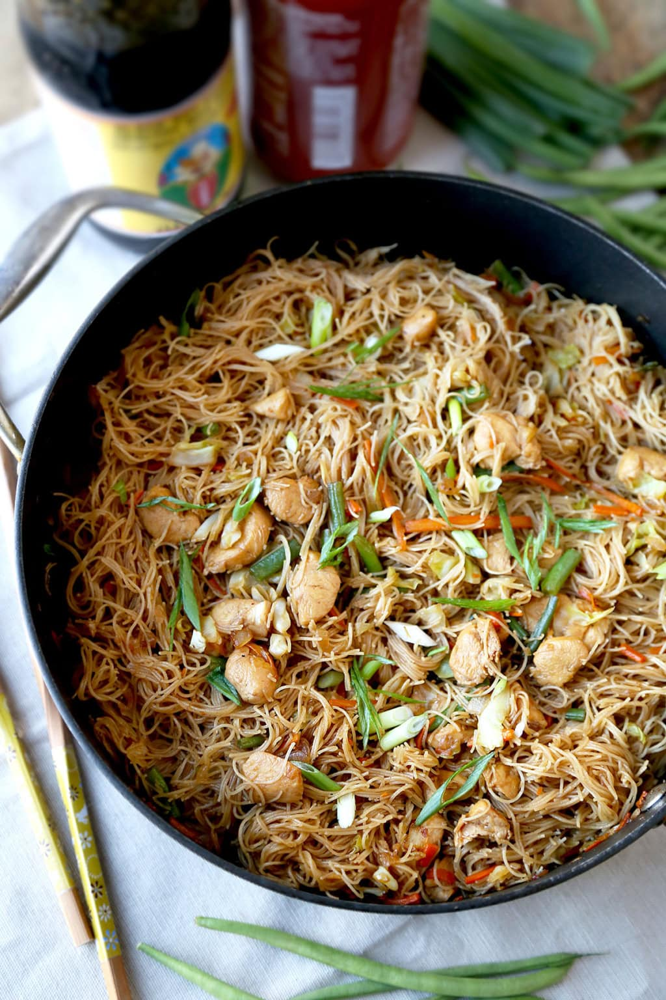

Pancit Bihon

Description
Pancit bihon is a traditional Filipino recipe that is very easy to prepare, my chewy rice noodles are tossed with vegetables and chicken, and cooked in a sweet and savory sauce. Not only is it delicious, my pancit recipe only takes 25 minutes to make from start to finish.
Engredients
- Peanut Oil: Most Asian recipes call for peanut oil for its nutty flavor. However, you can use a neutral oil such as vegetable or grapeseed oil to make this dish and it will be just as good.
- Chicken Breast: I use boneless, skinless chicken breast for this recipe since the chicken needs to be cut into bite size pieces. But you are more than welcome to use bone-in with skin on if you are planning to serve it on top of the pancit. Cook your chicken in a separate pan until it is cooked through and follow the same steps to the recipe.
- Garlic: I am using two cloves, minced, to add a little pungency but you can use more if you are a garlic lover.
- Onion: I am using a small yellow onion and chopping it into small pieces. If you do not have a yellow onion but happened to have a white one, red one, or some shallots, that is fine too.
- Bihon Noodles: Bihon noodles are thin noodles made of cornstarch and rice flour. They are very similar to thin rice noodles and vermicelli noodles which is why both make good substitutes.
- Mixed vegetables: I am using a mix of green beans, carrots, and cabbage, but you can have fun here and come up with your own combination.
- Pancit Sauce: A mix of low sodium chicken stock, dark soy sauce, soy sauce, oyster sauce, and sugar.
- Salt and Pepper: Only add if you think it needs extra seasoning.
Steps
- Sauce. Whisk all the ingredients for the sauce in a bowl and set aside.
- Chicken. Add a little oil to a deep skillet and cook the chicken. Transfer the chicken to a plate and set aside.
- Garlic and onions. Cook the garlic and onion until they are fragrant.
- Cooked chicken and veggies. Return the chicken to the skillet and add the vegetables. Stir fry until the vegetables are soft but still yielding a little crunch.
- Add the sauce. Whisk the sauce, add it to the pan, and bring it to a boil.
- Cook the noodles. Add the rice noodles and gently press them down so they are evenly coated with the liquid. Cook until the noodles are tender.
- Season and serve. Turn the heat off and transfer the dish to a serving bowl or plate. Serve with soy sauce and lemon wedges.
Home